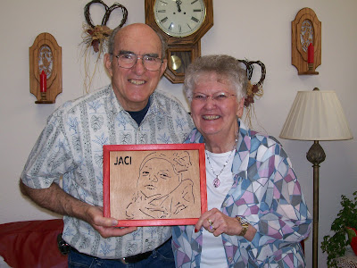

Wooden art with heart
6/4/2009
{kind=link}

We are accustomed to having packages delivered frequently to our door. Without even opening the parcel I generally know by size, shape, and weight when a dummy needing some sort of assistance has arrived. Then there are the packages of unusual size that arrive. Such was the case yesterday. That's when I check to see if the sender's name is on the return label. "Do you have any idea what Donald Woodford would be sending us?" I asked Adelia. "I have no idea," she replied.{kind=link}
Well, in that case the best thing to do is open the box without delay! I can't tell you how amazed we were to find enclosed a beautiful framed woodcut art portrait of our new great-granddaughter, Jaci Michelle Detweiler (right)! The artwork was expertly handcrafted by Donald Woodword. The piece was accompanied by a personally created card with a heart-warming note of appreciation for "the many things you have done for the vent community". We are so richly blessed in so many ways by our friends in the vent community. Words are inadequate. Thank you, Donald!